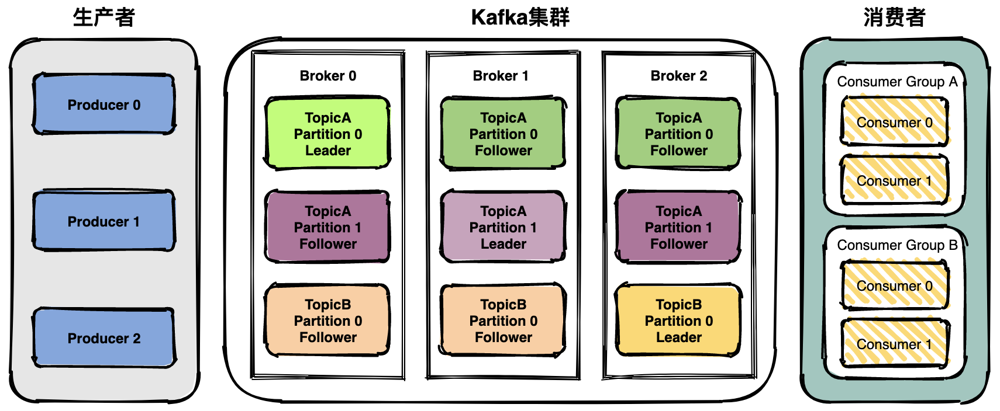

Kerberos和Sentry
1、CDH
ZooKeeper 是一个开放源码的分布式协调服务，主要为了解决分布式架构下数据一致性问题，它是集群的管理者，监视着集群中各个节点的状态，根据节点提交的反馈进行下一步合理操作。最终，将简单易用的接口和性能高效、功能稳定的系统提供给用户。

（1）数据模型
- ZooKeeper 采用层次化的目录结构，类似于文件系统，每个数据单元称为 ZNode 。整个 ZooKeeper 存储的数据可以看作是一个树状结构，每个节点可以存储少量数据，并且可以有子节点。
（2）ZAB 协议（ZooKeeper Atomic Broadcast）
- ZooKeeper 采用 ZAB 协议 作为其核心一致性算法，确保分布式环境下的数据一致性，并能很好地支持崩溃恢复。
- ZAB 的工作模式
- 崩溃恢复模式：当 ZooKeeper 集群启动或 Leader 发生故障时，进入恢复模式，选举新的 Leader 并同步数据。
- 广播模式：Leader 选举完成后，所有事务性请求（写操作）都由 Leader 处理，并通过 ZAB 进行复制到 Follower。
- ZAB 中三个主要的角色
- Leader ：集群中唯一的写请求处理者 ，能够发起投票（投票也是为了进行写请求）。
- Follower：能够接收客户端的请求，如果是读请求则可以自己处理，如果是写请求则要转发给 Leader 。在选举过程中会参与投票，有选举权和被选举权 。
- Observer ：没有选举权和被选举权的 Follower 。
（3）Watcher 机制
- ZooKeeper 提供了一种 观察者（Watcher）机制，允许客户端监听 ZNode 变化，并在数据或节点发生变更时收到通知。
- Watcher 的触发条件
- 节点数据变化（修改、删除）
- 节点子节点列表变化（添加、删除子节点）
- 节点创建或删除（适用于监听不存在的节点）
（4）会话管理
窗口是流处理中用于分组和聚合事件的机制。Flink 支持多种窗口类型：
- ZooKeeper 使用 会话（Session） 来管理客户端连接，每个客户端连接到 ZooKeeper 时都会创建一个会话。 客户端会定期向 ZooKeeper 发送心跳，防止会话超时，如果客户端在会话超时前重新连接 ZooKeeper，可以继续使用原会话 ID。如果客户端长时间不与 ZooKeeper 交互（超时），ZooKeeper 认为该客户端已经断开连接，并删除它的临时节点。
2、Kerberos（官网）
Kafka 是一个分布式流处理平台，广泛应用于高吞吐量的消息传递和实时数据流处理。它能够处理大量的实时数据流，并且支持分布式、高可用和高可扩展的架构。
（1）Producer（生产者）
- Producer 是消息的生产者，它负责将消息发送到 Kafka 中的指定 Topic。Producer 可以将消息发送到特定的分区，也可以让 Kafka 自动选择分区。Producer 是消息流入 Kafka 系统的源头。
（2）Consumer（消费者）
- Consumer 是从 Kafka 中消费消息的客户端。它可以从一个或多个 Topic 中获取消息并进行处理。消费者通常组成一个消费者组（Consumer Group），多个消费者并行处理消息。
- Consumer Group（消费者组）是 Kafka 中消费者的一个重要概念。一个消费者组中的多个消费者共同消费一个或多个 Topic 中的消息。Kafka 确保每个分区只会被消费者组中的一个消费者消费，这样就可以实现负载均衡。
（3）Topic（主题）
- Topic 是 Kafka 中消息的逻辑分类，生产者将消息发布到特定的 Topic，消费者则从指定的 Topic 中消费消息。
（4）Partition（分区）
- 每个 Kafka Topic 都可以被划分为多个分区。每个分区是 Kafka 中的基本存储单位，消息会被分布到不同的分区中。分区使 Kafka 可以横向扩展，提升吞吐量。
（5）Broker（代理）
- Broker 是 Kafka 的核心服务器，负责存储消息并处理客户端的请求。一个 Kafka 集群由多个 Broker 组成，Kafka 集群的规模可以随着业务需求的增加进行横向扩展。
（6）Offset（偏移量）
- Kafka 使用偏移量来标识消息在分区中的位置。每个消息在分区内都有一个唯一的偏移量，消费者根据偏移量来消费消息。
3、Sentry（官网）
Flume是一个分布式的、可靠的、可用的服务，用于高效地收集、聚合和移动大量的日志数据。

（1）一个flume agent（事务）可以分成三部分
- 源（Source）：用于从外部系统（如日志文件、网络流、数据库等）获取数据，并通过将获取到的数据封装成 Event 发送到 Flume 的后续组件。
- 通道（Channel）：用于临时存储从 Source 接收到的事件，直到它们被 Flume 的 Sink 组件处理。
- 接收器（Sink）：用于将事件从 Channel 发送到外部系统（例如 HDFS、Kafka、数据库等）的组件。Sink 会从 Channel 中读取事件，并根据配置将其写入到目标系统中。
（2）flume 的工作流程
- Source 从外部系统获取数据并将其转化为 Event。
- Channel 存储这些 Event，确保数据可靠传输。
- Sink 从 Channel 中读取 Event，并将其发送到外部存储或分析系统。
4、部署CHD
（1）准备虚拟机
- 对于hadoop101，由于它需要安装cdh server，所以需要更大的内存，这里我们设置内存为4G，磁盘容量为40G
- 对于其它两台机器，按照如下的配置，即设置内存为2G，磁盘容量为30G

- 准备虚拟机的其它步骤均与k8s集群部署中相同，这里不再重复
- 接着我们依然和之前k8s部署的时候一样，使用MobaXterm连接每台虚拟机，对每台机器配置名称与ip的对应关系
- 先点击multi-execution，以同时对三台虚拟机进行相同的操作，复制完命令后可以通过右上角的multi-paste进行同步粘贴
- 编辑配置文件
nano /etc/hosts
- 输入以下内容
192.168.10.101 hadoop101 hadoop101
192.168.10.102 hadoop102 hadoop102
192.168.10.103 hadoop103 hadoop103
- 输入完毕后使用ctrl+x，然后按y，接着再回车即可退出文件编辑

- 然后我们退出同步操作界面，回到hadoop101的连接界面，配置其对其它节点的免密登录
- 输入下面的命令，并连续按三次enter键
ssh-keygen -t rsa
- 接着依次输入下面的命令，每输入一条命令后输入yes，再输入虚拟机的密码，这个密码即我们之前在虚拟机配置时设置的密码，这样就配置了hadoop101对其它节点的免密登录
ssh-copy-id hadoop101
ssh-copy-id hadoop102
ssh-copy-id hadoop103

- 上传所需脚本至hadoop101，在右侧文件夹栏的空白处右键鼠标，选择upload to current folder
- 解压所上传的脚本，并授予脚本权限，接着进入脚本目录并测试是否可以使用
unzip bin-kerberos.zip
chmod 77 bin/*
cd bin
xsync
- xsync脚本用于同步文件或目录到其他主机，xcall.sh脚本用于在多台主机上批量执行相同命令
（2）安装JDK
- 接下来我们在每个节点上安装JDK
- 我们依然在hadoop101上进行操作，先进入/opt目录下创建两个文件夹以存放资源包
cd /opt
mkdir module
mkdir software
- 而后在目录/opt/module下上传文件夹 1.CDH6，上传方式参考之前上传压缩包的方式，注意这里需要先进入目录/opt/module下再上传

- 接着进入所上传的文件目录下
cd 1.CDH6/
- 安装JDK
rpm -ivh oracle-j2sdk1.8-1.8.0+update181-1.x86_64.rpm
- 接着编辑环境变量
- 进入文件编辑页面
nano /etc/profile.d/my_env.sh
- 添加如下内容
export JAVA_HOME=/usr/java/jdk1.8.0_181-cloudera
export CLASSPATH=.:$CLASSPATH:$JAVA_HOME/lib
export PATH=$PATH:$JAVA_HOME/bin

- 应用更改并检查是否生效，能看到java的版本就是生效了
source /etc/profile.d/my_env.sh
java -version
- 分发环境
xsync /usr/java/
xsync /etc/profile.d/my_env.sh

- 进入每个节点的操作界面，均执行下面的命令以应用更改
source /etc/profile.d/my_env.sh

- 使用脚本查看每个节点上的应用是否生效
xcall.sh java -version
（3）配置mysql
- 接下来在每个节点上配置mysql
- 首先需要更换源以便下载
sudo mv /etc/yum.repos.d/CentOS-Base.repo /etc/yum.repos.d/CentOS-Base.repo.backup
sudo curl -o /etc/yum.repos.d/CentOS-Base.repo http://mirrors.aliyun.com/repo/Centos-7.repo
- 然后我们安装mysql所需的依赖
yum install libaio
yum -y install autoconf
- 接着下载mysql的安装包并安装
wget https://downloads.mysql.com/archives/get/p/23/file/MySQL-shared-compat-5.6.24-1.el6.x86_64.rpm
wget https://downloads.mysql.com/archives/get/p/23/file/MySQL-shared-5.6.24-1.el6.x86_64.rpm
rpm -ivh MySQL-shared-5.6.24-1.el6.x86_64.rpm
rpm -ivh MySQL-shared-compat-5.6.24-1.el6.x86_64.rpm
- 安装MySQL服务端
cd /opt/module/1.CDH6
unzip mysql-libs.zip
cd mysql-libs/
sudo rpm -e --nodeps mariadb-libs
sudo rpm -ivh MySQL-server-5.6.24-1.el6.x86_64.rpm

- 查看初始的随机密码，用于后续登录
cat /root/.mysql_secret
- 查看mysql状态并启动
service mysql status
service mysql start
service mysql status

- 接着安装mysql的客户端
rpm -ivh MySQL-client-5.6.24-1.el6.x86_64.rpm
- 登录mysql并修改密码，这里mysql的用户名是root，密码即刚刚查看的密码，也就是这里的vlEM7tomcvfOJMGR，需要替换为自己查看到所生成的随机密码
mysql -uroot -pvlEM7tomcvfOJMGR
SET PASSWORD=PASSWORD('000000');
exit

- 使用修改后的密码进行登录，可以进行一些基本的mysql操作，注意，语句use mysql;是必须执行的，后续操作需要用到，而其它的查询语句可以不执行，只是为了验证mysql的基本功能
mysql -uroot -p000000
show databases;
use mysql;
show tables;
desc user;
select User, Host, Password from user;
- 而后配置只要是root用户+密码，在任何主机上都能登录MySQL数据库
update user set host='%' where host='localhost';
delete from user where host!='%';
flush privileges;
exit;
（4）安装CM
- 接下来我们安装CM
- 首先进入mysql，并创建各组件需要的数据库，而后退出
mysql -uroot -p000000
GRANT ALL ON scm.* TO 'scm'@'%' IDENTIFIED BY 'scm';
CREATE DATABASE scm DEFAULT CHARACTER SET utf8 DEFAULT COLLATE utf8_general_ci;
CREATE DATABASE hive DEFAULT CHARSET utf8 COLLATE utf8_general_ci;
CREATE DATABASE oozie DEFAULT CHARSET utf8 COLLATE utf8_general_ci;
CREATE DATABASE hue DEFAULT CHARSET utf8 COLLATE utf8_general_ci;
CREATE DATABASE sentry DEFAULT CHARACTER SET utf8 DEFAULT COLLATE utf8_general_ci;
exit;

- 接着解压mysql的依赖包，并将mysql-connector-java-5.1.27-bin.jar拷贝到/usr/share/java路径下，而后重命名
cd /opt/module/1.CDH6/mysql-libs
tar -zxvf mysql-connector-java-5.1.27.tar.gz
cd mysql-connector-java-5.1.27
mv mysql-connector-java-5.1.27-bin.jar mysql-connector-java.jar
mkdir /usr/share/java
cp mysql-connector-java.jar /usr/share/java/
xsync /usr/share/java/
- 我们再创建一个cloudera-manager目录,并将CDH安装文件移动到该目录下
mkdir /opt/cloudera-manager
cd /opt/module/1.CDH6
tar -zxvf cm6.3.1-redhat7.tar.gz
cd cm6.3.1/RPMS/x86_64/
mv cloudera-manager-agent-6.3.1-1466458.el7.x86_64.rpm /opt/cloudera-manager/
mv cloudera-manager-server-6.3.1-1466458.el7.x86_64.rpm /opt/cloudera-manager/
mv cloudera-manager-daemons-6.3.1-1466458.el7.x86_64.rpm /opt/cloudera-manager/

- 安装CM，先在hadoop101上执行安装，而后再将安装包进行分发
cd /opt/cloudera-manager/
xsync /opt/cloudera-manager/
rpm -ivh cloudera-manager-daemons-6.3.1-1466458.el7.x86_64.rpm
- 在其它两个节点，即hadoop102和hadoop103上安装CM，这两个节点上都需要执行下面的命令
cd /opt/cloudera-manager/
rpm -ivh cloudera-manager-daemons-6.3.1-1466458.el7.x86_64.rpm

- 接下来安装前置环境，首先在hadoop101上安装
yum install bind-utils psmisc cyrus-sasl-plain cyrus-sasl-gssapi fuse portmap fuse-libs /lib/lsb/init-functions httpd mod_ssl openssl-devel python-psycopg2 MySQL-python libxslt
- 安装卡在下面的步骤时，输入y即可（表示yes）
- 在hadoop102和hadoop103上，需要将之前的换源操作执行一遍，再进行安装
sudo mv /etc/yum.repos.d/CentOS-Base.repo /etc/yum.repos.d/CentOS-Base.repo.backup
sudo curl -o /etc/yum.repos.d/CentOS-Base.repo http://mirrors.aliyun.com/repo/Centos-7.repo
yum install bind-utils psmisc cyrus-sasl-plain cyrus-sasl-gssapi fuse portmap fuse-libs /lib/lsb/init-functions httpd mod_ssl openssl-devel python-psycopg2 MySQL-python libxslt
- 而后安装cm agent，同样地，每台虚拟机都要执行
rpm -ivh cloudera-manager-agent-6.3.1-1466458.el7.x86_64.rpm
- 接着修改agent的配置文件，主要为了让所有节点都知道server是谁
nano /etc/cloudera-scm-agent/config.ini
- 修改下面的部分的值为hadoop101
server_host=hadoop101
- 输入完毕后使用ctrl+x，然后按y，接着再回车即可退出文件编辑
- 然后使用脚本分发该配置文件到所有节点
xsync /etc/cloudera-scm-agent/config.ini
- 然后我们回到hadoop101上安装server
rpm -ivh cloudera-manager-server-6.3.1-1466458.el7.x86_64.rpm

- 接下来我们上传CDH包到parcel-repo，parcel-repo就相当于CDH的本地仓库
cd /opt/module/1.CDH6
mv CDH-6.3.2-1.cdh6.3.2.p0.1605554-el7.parcel* /opt/cloudera/parcel-repo
mv manifest.json /opt/cloudera/parcel-repo
cd /opt/cloudera/parcel-repo
mv CDH-6.3.2-1.cdh6.3.2.p0.1605554-el7.parcel.sha1 CDH-6.3.2-1.cdh6.3.2.p0.1605554-el7.parcel.sha
- 然后我们修改CDH的数据库文件，让它指向mysql
nano /etc/cloudera-scm-server/db.properties
- 在com.cloudera.cmf.db.type=mysql这一行下添加如下内容
com.cloudera.cmf.db.host=hadoop101:3306
com.cloudera.cmf.db.name=scm
com.cloudera.cmf.db.user=scm
com.cloudera.cmf.db.password=scm
com.cloudera.cmf.db.setupType=EXTERNAL
- 注释掉最后一行：com.cloudera.cmf.db.setupType=INIT
- 输入完毕后使用ctrl+x，然后按y，接着再回车即可退出文件编辑

- 接着我们就可以导入数据了
/opt/cloudera/cm/schema/scm_prepare_database.sh mysql scm scm

- 这里还需要将所有节点上的防火墙关闭，下面的命令需要在所有节点上执行一遍
systemctl stop firewalld
- 最后，我们在主节点启动server，即在hadoop101上执行下面的命令
systemctl start cloudera-scm-server
- 并在所有节点启动agent，即在hadoop101、hadoop102以及hadoop103上均需执行下面的命令
systemctl start cloudera-scm-agent
- 在浏览器访问下面的ip即可看到CDH的web界面，注意这里的ip地址需改为自身的hadoop101虚拟机所配置的ip地址，后面的端口号不用改变

（5）CDH集群部署
- 使用admin作为用户名和密码进行登录
- 点击继续

- 勾选“接受”，点击继续
- 选择免费版，点击继续
- 点击继续

- 集群名称使用默认的Cluster 1，再点击继续

- 选择当前管理的主机，并勾选全部的虚拟机，再点击继续

- 点击继续
- 等候安装完毕
- 接下来需要对网络环境以及主机性能进行检测，分别点击这两个按钮
- 经过检查后如果出现下面的警告，我们需要进行修复，我们点击“显示检查器结果”
- 可以看到警告的出现是由于下面的问题，直接按照它所给出的提示进行操作就可以了，这里均采用临时修改的方式
- 回到虚拟机命令行，所有虚拟机均需要运行下面三条指令
sudo sysctl vm.swappiness=10
echo never > /sys/kernel/mm/transparent_hugepage/defrag
echo never > /sys/kernel/mm/transparent_hugepage/enabled
- 而后返回cdh的web页面，点击“重新运行”，便可以看到主机性能的检查也通过了，接着我们点击继续

- 接下来就可以安装各种组件了，我们先选择“自定义服务”并勾选HDFS、YARN、Zookeeper
- 每台虚拟机的角色分配如下
- 审核更改中的配置均使用默认配置，点击继续

- 接着等待安装完毕即可
- 安装完成
- 然后我们就可以进入到cdh的界面了

- 这里所存在的警告大多是因为当前集群的规模过小了，点击配置可以看到具体问题，由于是实验环境，所以可以暂时忽略

- 接着我们安装Hive
- 我们在CDH的主界面点击添加服务
- 选择Hive，再点击继续

- 主机角色分配如下

- 对数据库做如下的配置，并测试连接
- 审核更改这里按默认配置就可以

- 然后等待配置完成即可
- 最后我们安装hue，在CDH的主界面点击添加服务

- 选择hue，再点击继续
- 勾选第一个，再点击继续

- 主机角色分配如下
- 对数据库做如下的配置，并测试连接
- 等待配置完成

5、Kerberos认证
（1）配置kerberos
- 安装kerberos的server，只在hadoop101执行
yum install -y krb5-server krb5-workstation krb5-libs

- 安装kerberos的client，下面的指令均需要在hadoop102和hadoop103上执行
yum install -y krb5-workstation krb5-libs
- 而后回到编辑kdc.conf文件，完整内容如下
nano /var/kerberos/krb5kdc/kdc.conf
- 编辑krb5.conf文件，完整内容如下
nano /etc/krb5.conf
- 分发krb5.conf文件
xsync /etc/krb5.conf
- 生成kerberos数据库
kdb5_util create -s
- 而后设置密码，可以也设为000000
- 赋予Kerberos管理员所有权限，编辑下面文件，将EXAMPLE更改为为HADOOP
nano /var/kerberos/krb5kdc/kadm5.acl
- 启动kerberos服务
systemctl start krb5kdc
systemctl start kadmin
- 查看启动状态
systemctl status krb5kdc
systemctl status kadmin
- 设置开机自启
systemctl enable krb5kdc
systemctl enable kadmin
（2）Kerberos数据库操作
- 本地登录
kadmin.local
- 创建kerberos主体
addprinc admin/admin
- 查看所有主体
list_principals
- 退出登录
quit
（3）Kerberos主体认证
- 两种认证方式
- 第一种是使用knit认证
- 先查看未认证时的情况
klist
- 进行认证，而后输入密码000000
kinit admin/admin
- 第二种是keytab密钥文件认证
- 生成主体admin/admin的keytab文件到指定目录/root/admin.keytab
kadmin.local -q "xst -norandkey -k /root/admin.keytab admin/admin@HADOOP.COM"
- 使用keytab进行认证
kinit -kt /root/admin.keytab admin/admin
- 再次查看认证凭证
klist
（4）CDH启用Kerberos安全认证
- 先在hadoop101上，为CM创建管理员主体/实例，而后设置密码为：000000
kadmin.local -q "addprinc cloudera-scm/admin"
（4）CDH启用Kerberos安全认证
- 而后在web页面启动kerberos
- 全部勾选，再点击继续
- kdc信息的具体配置如下
- 无需勾选，点击继续
- 这里输入我们刚刚创建的主体以及密码
- 点击继续
- 点击继续
- 等待配置完成
- 这里就已经成功在cdh上启用kerberos了
- 我们可以点击管理-安全以查看生成的kerberos凭据
（5）测试Kerberos安全认证
- 先销毁凭据
kdestroy
- 查看凭据是否被销毁，可以看到当前没有凭据
klist
- 查看hdfs，可以看到没有权限
hadoop fs -ls /
- 创建用户
kadmin.local -q "addprinc test/test@HADOOP.COM"
- 设置密码：000000
- 进行用户认证
kinit test/test@HADOOP.COM
- 输入刚刚设置的密码：000000
- 再次访问hdfs，发现可以访问了
hadoop fs -ls /
6、配置Sentry
（1）在CDH添加sentry服务
- 回到CDH的主界面，点击添加服务
- 选择sentry
- 主机角色分配如下
- 数据库设置如下，配置完点击测试连接，再点击继续
- 等待配置完成
（2）修改相关配置
- 回到CDH的主界面，点击hive
- 点击配置，并在搜索框输入：hiveserver2 启用模拟，而后取消勾选并保存更改
- 而后继续在搜索框搜索：启用数据库中的存储通知，勾选并保存更改
- 而后继续在搜索框搜索：sentry，勾选sentry并保存更改
- 然后我们回到CDH主界面并选择hdfs
- 点击配置，并在搜索框中输入：启用访问控制列表，勾选并保存更改
- 而后在搜索框中输入：启用 sentry 同步，勾选并保存更改
- 回到主界面，点击重启，应用更改项
- 点击重启过时服务
- 点击立即重启
- 等待重启完成
（3）测试sentry
- 我们回到虚拟机的命令行，在三个虚拟机上均需创建角色并设置密码
useradd reader
useradd writer
passwd reader
passwd writer
- 而后我们回到CDH的主界面，点击hue
- 再进入hue的webui
- 使用hive作为用户名，000000作为初始密码登录hue
- 点击右上角的管理用户
- 添加reader组和writer组
- 添加reader用户和writer用户到对应的组里
- 添加hive组，并将hive用户添加到组里
- 我们回到命令行，使用hive作为用户获取凭证，而后进入hive，创建student表
kinit hive/hive@HADOOP.COM
hive
create table student(
id string comment '学号',
name string comment '姓名',
sex string comment '性别',
age string comment '年龄'
) comment '学生表';
- 然后我们回到hue的webui，点击安全性
- 点击“+”号，创建reader_role和writer_role，分别授予select和insert权限
- 接着我们点击右上角，注销当前的hive用户
- 使用reader用户登录，密码使用000000
- 进行查询，成功
- 进行插入，失败，报错为权限不够
- 接着我们点击右上角，注销当前的reader用户
- 使用writer用户登录，密码使用000000
- 进行查询，失败，报错为权限不够
- 进行插入，成功
- 由于资源限制，这里可能执行的很慢，或者任务一直处于未定状态，但是可以看到是提交了mapreduce任务的，只要能据此了解sentry的工作方式即可